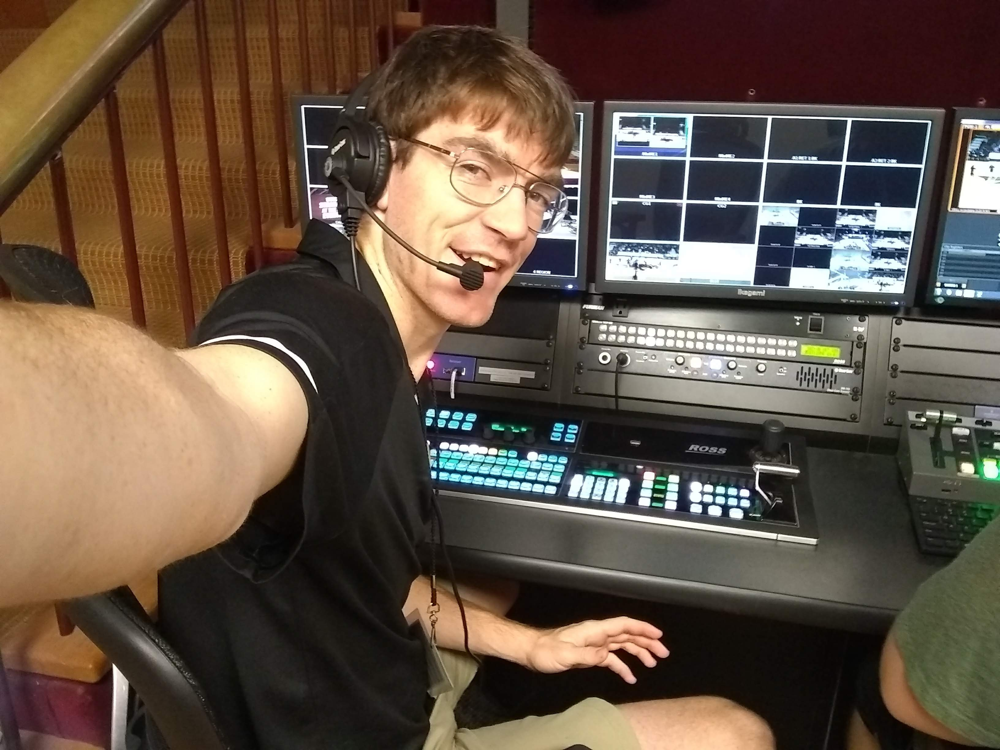
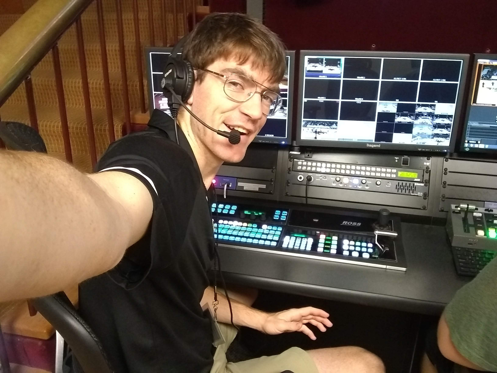

Workshop
Creating is essential to the human brain.
Part 1: The Start
In high school, my classmates deemed me the Most Creative in a class that had approximately 512 students. I made my first steps of creativity in the realm of video making.
Part 2: The Art
On Arrival to Texas State, I made it my mission to take what I learned in high school and apply it to my career. So, I walked up to the cameraman working the Baseball Game and said to him, "How do I have your Job?" Then his boss walked out, and I chatted with him for a bit and he turned to me and said, "Can you come in tomorrow?" and the rest is history. Now, I am the Technical Director for the ESPN+ shows at Texas State.
 

Part 3: The Low-Key
In ninth grade, my father discovered a way to train baseball players, and how to mimic a pitch that mimicked the top pitchers in the game. He presented this to the family, and said he needed help, so I jumped right in and over nine years we have been developing the training. We had to keep it low-key (secretive) because we didn't want anyone to steal our idea. We slowly progressed and reached out to teams, and set some loft goals. Eventually, a Sports Optometrist saw the value and invited us out to spring training. We gratefully accepted the opportunity. We left with great feedback and over the last year we have developed a machine that will revolutionize the game of baseball and other hitting sports.